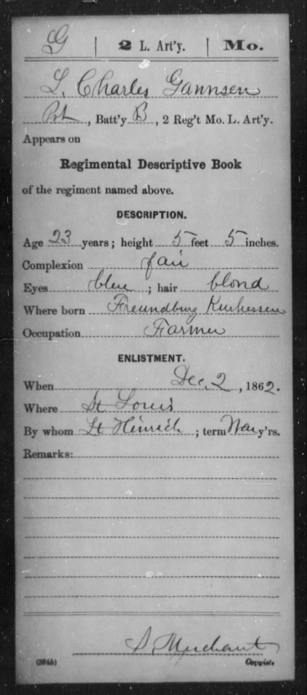

Musterungsurkunde aus dem Bürgerkrieg
2. Dez. 1862 PrimärquelleDie erste Erwähnung sowohl eines Ortes als auch eines Staates in Charles' gesamtem dokumentarischen Befund: „Freundburg Kurhessen.“ Peter Schräders phonetische Neulesung entschlüsselte das unmögliche „Freundburg“ als Verhören eines Schreibers von Trendelburg — die deutsche „Tr-“-Lautfolge als „Fr-“ gehört, „Trendel“ als „Freund“ missverstanden. Damit wird diese Musterungszeile zum grundlegenden geographischen Anker der gesamten Untersuchung: ein realer hessischer Staat (Kurhessen / Hessen-Kassel) und ein realer hessischer Ort (Trendelburg, im Kreis Hofgeismar, ~5 km von Deisel entfernt).
- Eingetragen
- "L. Charles Gannsen · Where born: Freundburg Kurhessen"
- Entschlüsselt zu
- Trendelburg, Kreis Hofgeismar, Kurhessen
- Äußere Merkmale
- Alter 23 · 5'5" · hell · blaue Augen · blond · Landwirt
- Triangulation mit
- Karte 3 (Deisel, ~5 km von Trendelburg)
- Quellenbewertung
- ★ Orig · aus erster Hand — Original-Militärdokument von 1862; Charles als Informant für seine eigenen Angaben

Regimental Descriptive Book · L. Charles Gannsen · „Where born: Freundburg Kurhessen“★ Warum Freundburg = Trendelburg — phonetische Entschlüsselung + Triangulation 1862/1866
Schritt 1 — lautliche Ersetzung (Peter Schräder, 26. Feb. & 6. Mai 2026): Charles, deutscher Muttersprachler und erst ein Jahr im Englischen geübt, gibt seinen Geburtsort mündlich gegenüber einem englischsprachigen Rekrutierungsbeamten an. Der Beamte hört das gesprochene deutsche Trendelburg und schreibt das englisch geformte Freundburg. Das Verhören folgt einer Regel: Tr-endel-burg → Fr-eund-burg (die „Tr-“-Lautfolge wird im englischen Ohr zu „Fr-“); Tr-endel-burg → Fr-eund-burg (das bedeutungslose „endel“ → das vertraute deutsche Freund); die deutsche Ortsendung -burg bleibt unversehrt erhalten.
Schritt 2 — die Triangulation, die es absichert: Die phonetische Entschlüsselung allein wäre spekulativ. Was sie zu einer belastbaren Identifizierung macht, ist ein zweites, unabhängiges Dokument aus vier Jahren später, das das unmittelbar benachbarte Dorf nennt. Zwei Schreiber, zwei Sprachen, ohne Kontakt zueinander — beide weisen auf dasselbe 5 km × 5 km große Quadrat im Kreis Hofgeismar:
| Jahr | Quelle | Eingetragen als | Entschlüsselt zu |
|---|---|---|---|
| 1862 | Musterung im Bürgerkrieg (englischer Schreiber) | „Freundburg, Kurhessen“ | Trendelburg |
| 1866 | St. Marcus-Heiratsregister (deutscher lutherischer Pfarrer) | „aus Deisse, Kreis Cassel, Churhessen“ | Deisel |
Trendelburg und Deisel liegen ~5 km voneinander entfernt im selben Pfarreiverbund des Kirchenkreises Hofgeismar. Jedes Dokument für sich wäre mehrdeutig; gemeinsam grenzen sie die Antwort ein. → Vollständiges Forschungsprotokoll „Freundburg, Kurhessen“ · → Vollständiges Deisel-Forschungsprotokoll